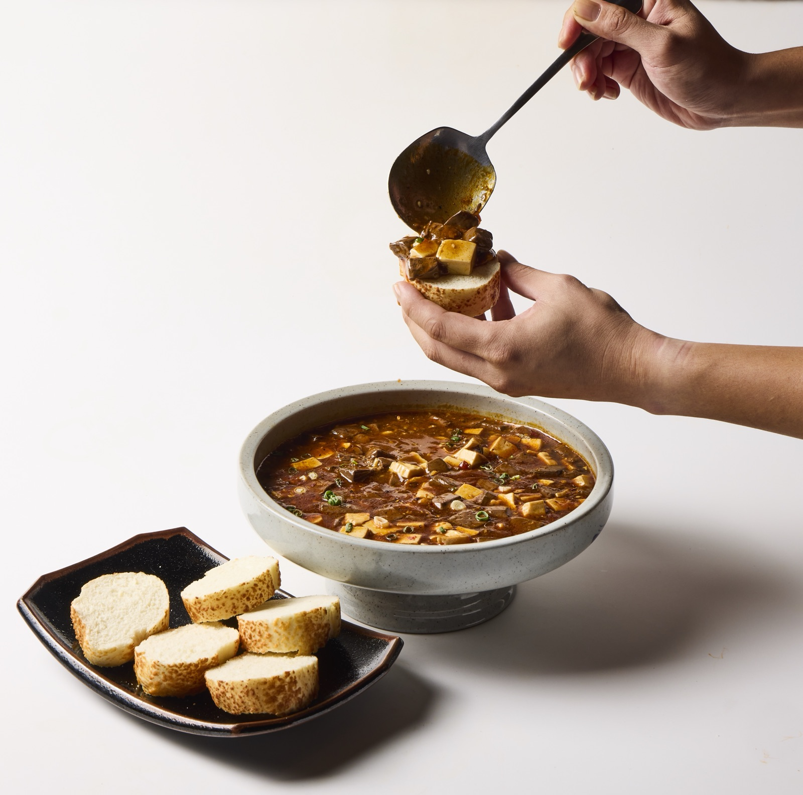
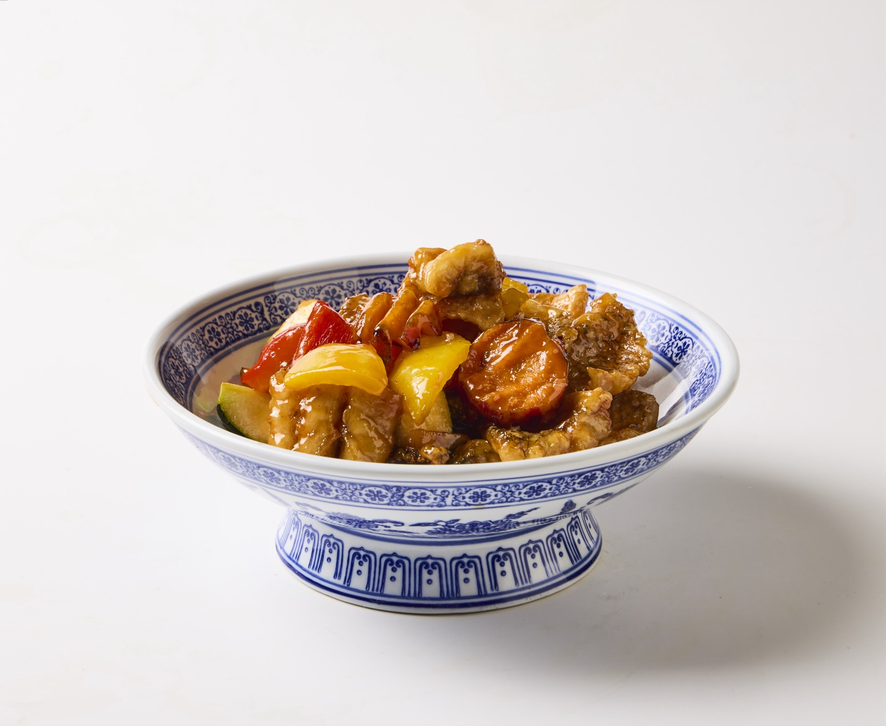
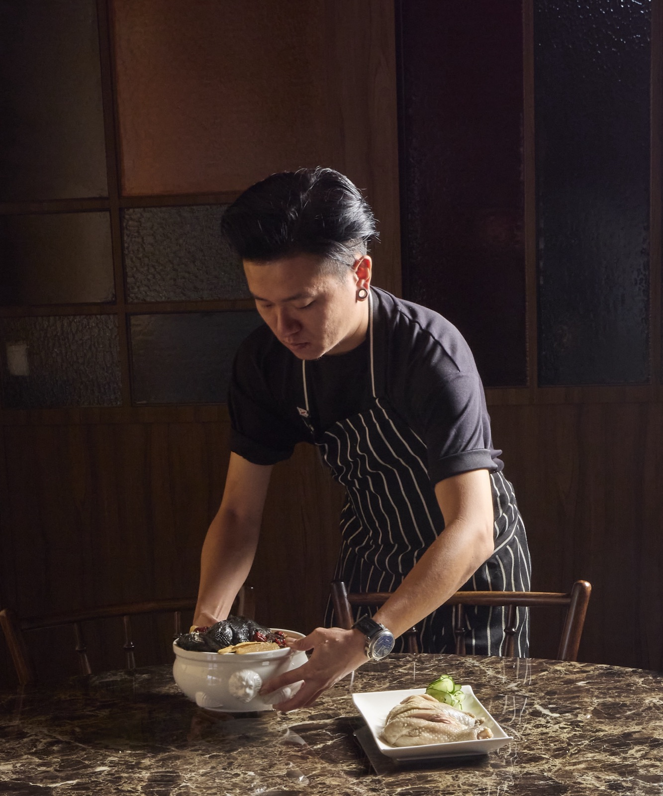

開店規劃新台菜研發營運陪跑
福芳台菜｜從一塊土地開始
建立能持續成長的新台菜品牌
傑弗德從開店前的排水、設備與動線開始參與，直到菜單、服務細節及開幕後營運，讓新台菜不只被設計，也真正成為一套能持續運作的餐飲系統。

傑弗德從開店前的排水、設備與動線開始參與，直到菜單、服務細節及開幕後營運，讓新台菜不只被設計，也真正成為一套能持續運作的餐飲系統。
品牌需要從零建立餐飲定位與後場系統，並在開業後持續提升菜單、出餐效率及用餐體驗。
在空間定案前即介入排水、設備及動線，並把嘉義、雲林的飲食記憶轉化為適合現代聚餐的新台菜。
從一個開店構想，逐步建立成具有地方辨識、產品記憶與完整營運能力的餐飲品牌。
01 ／ 案例背景
業主與傑弗德合作約兩至三年，合作關係從碳少年、福芳九十延伸至福芳台菜。福芳台菜從土地及空間尚未正式啟動時即開始參與，並持續協助開店及後續營運約兩年。
02
業主最早提出的需求，是希望開一間有辨識度的新台菜餐廳。傑弗德進場後看見的問題更完整：品牌需要從零建立餐飲定位、空間與後場系統，並在開業後持續提升菜單、翻桌效率及營業表現；同時，新台菜必須兼顧家庭聚餐、節慶合菜與較年輕的用餐情境，三種情境不能只靠同一套菜單應付。
03
餐廳的成長不能只靠更換菜色或增加座位，必須讓空間、設備、出餐流程、菜單結構、服務細節及品牌溝通彼此配合——這個判斷決定了傑弗德從空間規劃階段就必須介入。
04
為什麼：後場系統若在裝修完成後才調整，成本與難度都會大幅提高。
影響：在排水、平面、設備及餐飲動線定案前即參與規劃。
為什麼：品牌需要一個能被記住、也站得住腳的定位起點。
影響：建立具地方辨識度的新台菜語彙，而非泛用的台菜印象。
為什麼：家庭聚餐、節慶合菜與居酒式聚會，對出餐節奏與份量的需求不同。
影響：同一套菜單能對應更多元的實際用餐情境。
為什麼：座位數固定的情況下，效率決定了實際能服務的客量。
影響：透過設備、流程及產品組合，提升相同空間的接客效率。
為什麼：開幕當下的狀態，不代表能長期穩定運作。
影響：持續處理人員教育、SOP、餐具盤飾及行銷營運，約兩年。
05
06
土地與空間尚未正式啟動時即介入，參與排水、平面與設備規劃。
以嘉義、雲林飲食記憶為基礎，發展新台菜菜單結構。
建立人員教育、SOP 及餐具盤飾標準。
陪品牌完成開幕，並確認現場出餐與服務流程。
持續協助開店及後續營運約兩年，處理行銷與現場優化。
案例影像



07 ／ 成果
品牌從開店概念逐步建立成具有地方辨識的新台菜餐廳，並透過菜單、設備與流程優化，提高既有空間的營運效率及接客能力。
以上為質性觀察與階段性成果說明，實際執行內容依合約範圍為準，不代表對特定營業額、獲利或回本時間的保證。
如果你正在準備開店、轉型，或發現原本有效的方法逐漸失去作用，我們可以先從釐清問題開始。